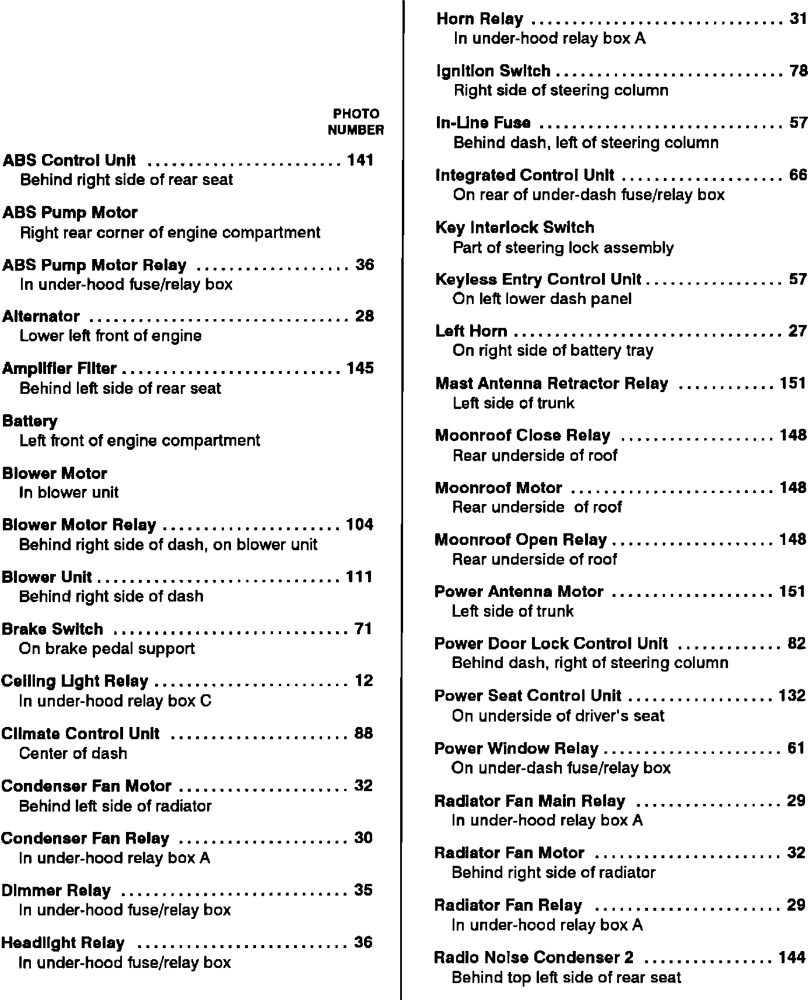
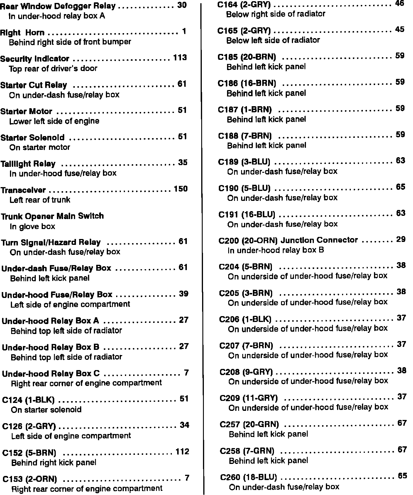
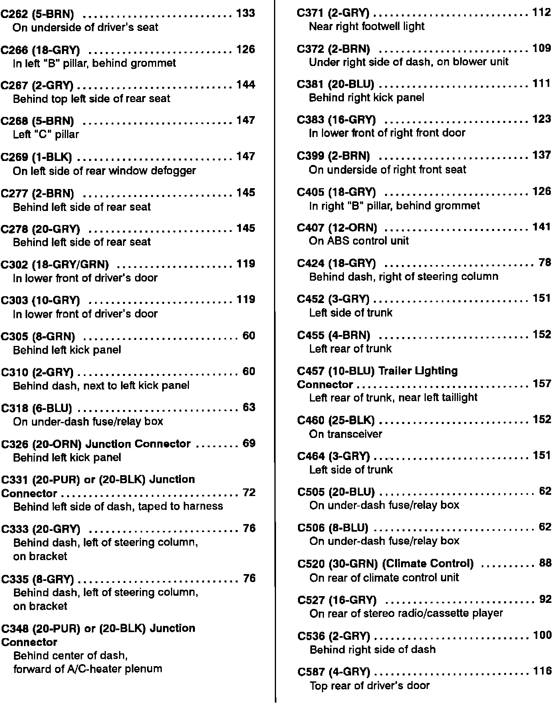
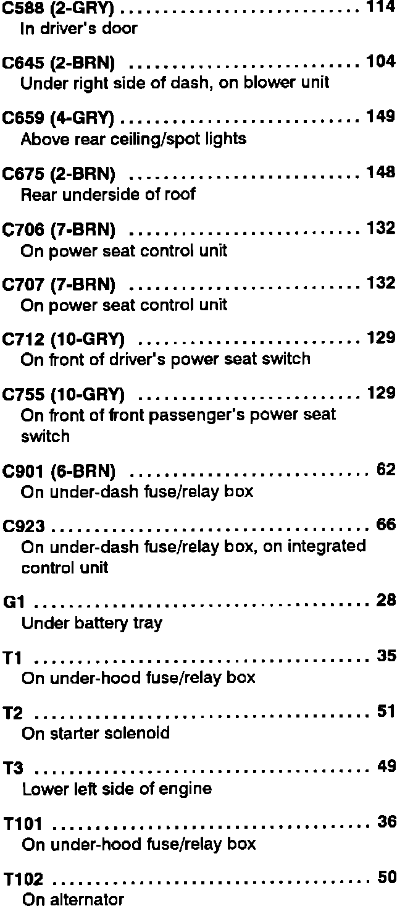

Power Distribution
Power Distribution Component Location Index (A Thru R):

Power Distribution Component Location Index (R Thru C260):

Power Distribution Component Location Index (C262 Thru C587):

Power Distribution Component Location Index (C588 Thru T102):
